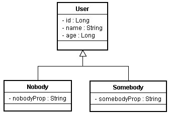
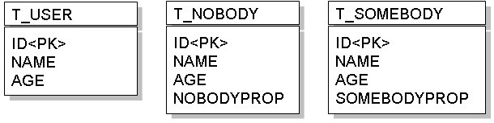

|
|
如果您採取的是物件模型的方式來設計程式，那麼繼承關係可能就會在您的程式設計中出現，然而關聯式資料庫的關聯模型與物件模型並不匹配，為了映射物件模型
與關聯模型，這邊先介紹最簡單的一種策略：Table per concrete class，也就是繼承體系中每一個類別就對應一個表格。 以實例來說明，如果您的程式中有以下的繼承關係：  最直覺的作法，就是為每個類別各設計一個表格，例如：  雖然這樣作，表格上沒有複雜的關係，除非是遺留下的系統原先表格就是這麼設計，否則不建議使用這種方式。 在以物件的觀點進行多型查詢時，例如查詢所有類型為User的資料時，必須將所有T_USER、T_NOBODY與T_SOMEBODY的資料都查出並加 以封裝，在下SQL語句時，必須使用SQL UNION、子查詢或使用多個SELECT個別查詢表格，才可以達到這個目的，在效能上不好。 另外，每個表格中有一些語義相同的欄位，例如name欄位，當領域模型物件修改時，這些相同語義的欄位就要同時跟著修改，多個表格共用相同語義，將造成維護上的困難。 而廠商很難為這個策略進行實作或實作方式不一，因此JPA並沒有要求廠商必須對此功能作出實作。 無論如何，若打算實作這個策略，在JPA下可以如下定義User類別，必須使用@Inheritance標註，並設定strategy為InheritanceType.TABLE_PER_CLASS：
package onlyfun.caterpillar; 而子類別的部份，直接標註@Entity與@Table即可，例如：
package onlyfun.caterpillar;
package onlyfun.caterpillar; 在persistence.xml中，要增加這三個類別的<class>標籤，以載入實體類別資訊。 若您儲存的是User實例，則會儲存至T_USER表格，若您儲存的是Nobody實例，則會儲存至T_NOBODY表格，若您儲存的是Somebody實例，則會儲存至T_SOMEBODY表格。 而查詢時若使用find()方法： user = entityManager.find(User.class, new Long(1));
則會從T_USER表格查詢。同樣地，若使用： nobody = entityManager.find(Nobody.class, new Long(2));
則會從T_NOBODY表格查詢。 若 使用 Query 物件 搭配JPQL來查詢，可以如下進行多型查詢： Query query = entityManager.createQuery("SELECT user FROM User user"); Iterator users = query.getResultList().iterator(); while(users.hasNext()) { user = (User) users.next(); System.out.printf("%d\t%s\t%d\n", user.getId(), user.getName(), user.getAge()); } 這會查詢T_USER、T_NOBODY與T_SOMEBODY所有的資料，實際查詢是使用SQL UNION、子查詢或使用多個SELECT個別查詢表格，則依廠商實作而有所不同。 由於廠商很難為這個策略進行實作或實作方式不一，JPA也沒有要求廠商必須對此功能作出實作，所以實際要看JPA的底層實作如何動作，在採取這個策略時必須對程式多所測試確定行為無誤。 |